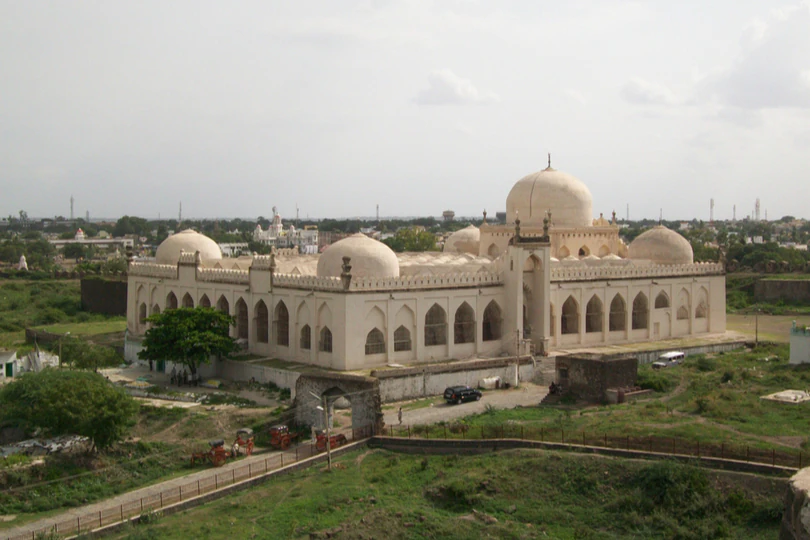
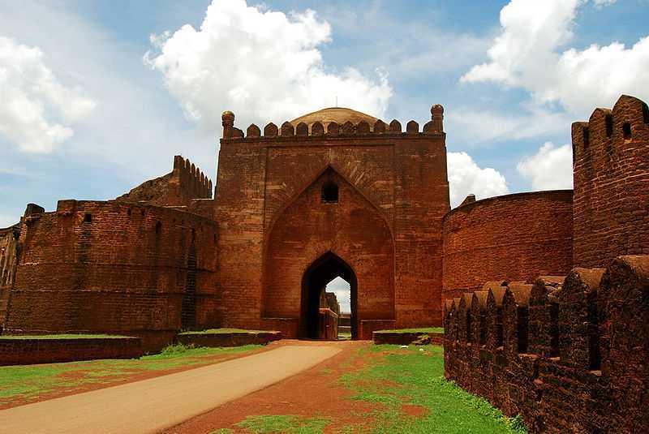
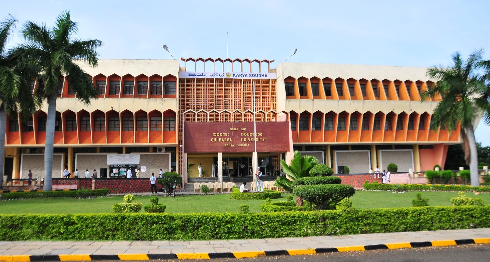
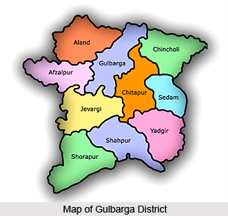

Gulbarga, also known as Kalaburagi, is a city located in the northern part of the Indian state of Karnataka.
This historical city has a rich heritage, cultural significance, and a unique blend of tradition and modernity.
Here are some details about Gulbarga:
1. Historical Significance:
Gulbarga has deep historical roots and was once the capital of the Bahmani Sultanate, an Islamic empire in the
Deccan region during the medieval period. The city is dotted with architectural remnants from this era, including
the famous Gulbarga Fort. The fort is an excellent example of Indo-Islamic architecture and a significant historical
landmark.

2. Religious Diversity:
Gulbarga is known for its religious diversity, with various temples, mosques, and churches coexisting harmoniously.
The Khwaja Bande Nawaz Dargah is a major Sufi shrine and a center of spiritual significance, attracting devotees
from various backgrounds.
3. Educational Institutions:
The city houses several educational institutions, including Gulbarga University, which contributes to the educational
development of the region. Students from all over the country come here to pursue higher education.

4. Basavakalyan:
Located near Gulbarga, Basavakalyan is a historically significant town known for its association with the great saint
and social reformer Basavanna. The Basavakalyan Fort and Basaveshwara Temple are prominent attractions here.
5. Unique Cuisine:
Gulbarga boasts a unique culinary tradition that blends North Karnataka and Hyderabadi influences. Traditional dishes
like Jolada Rotti (sorghum bread), Donne Biryani, and Gosht Kurma are popular in the region.

6. Culture and Festivals:
The city celebrates several cultural and religious festivals with great fervor. The annual Urs festival at the Khwaja Bande
Nawaz Dargah is a grand event that draws thousands of devotees. Additionally, traditional dance forms and folk music are
integral to the cultural tapestry of Gulbarga.
7. Agriculture and Industry:
Agriculture is a vital part of the local economy, with Gulbarga being known for the production of red gram (toor dal) and
other crops. The city is also seeing industrial growth, particularly in the cement and textile sectors.
8. Transportation Hub:
Gulbarga's strategic location as a transportation hub in North Karnataka has led to the development of road and rail
networks. The city's good connectivity makes it accessible from various parts of the state and neighboring regions.
9. Natural Beauty:
Gulbarga is surrounded by scenic landscapes and is known for its picturesque rural countryside. The region's agrarian
beauty with rolling hills, vast fields, and historical sites provides a serene backdrop for visitors.
Gulbarga, with its rich history, religious diversity, educational institutions, and unique cuisine, offers an enriching
experience for travelers interested in exploring the cultural tapestry of Karnataka. It stands as a city that proudly
preserves its historical roots while embracing the dynamics of the modern world.
